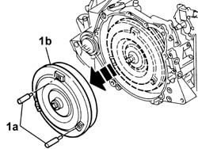
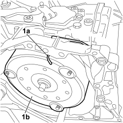
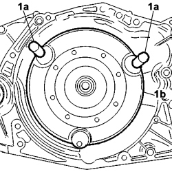
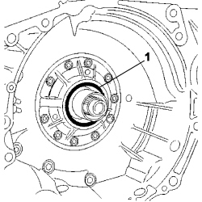
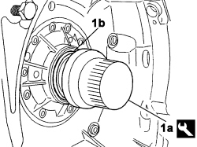
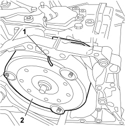

2130B10 AUTOMATIC TRANSMISSION TORQUE CONVERTER - R + R WITH TRANSMISSION REMOVED
- Path
- Procedures > 21 GEARBOX UNIT > 2130 AUTOMATIC TRANSMISSION WITH DIFFERENTIAL > 2130B AUTOMATIC TRANSMISSION COMPONENTS > 2130B10 AUTOMATIC TRANSMISSION TORQUE CONVERTER - R + R WITH TRANSMISSION REMOVED
- Kind
- repair procedure (removal / refitting; the operation number is the code)
- Applies to
- engines: 2.0 16v, 3.0 24V V6, 2.0 16V JTD; all production periods
- Interactive page
- https://sloeber94.github.io/elrnDB-fUlss/en/#/179007249
Applies to: engines: 3.0 24V V6; all production periods
 Removing
Removing
 Refitting
Refitting- Position the automatic transmission assembly safely.
- Remove the torque converter retaining bracket.
1. Tighten the appropriate size grips (1a) and release the torque converter (1b) from the automatic transmission.

Applies to: engines: 3.0 24V V6; all production periods
Refitting
Removing- Position the torque converter in the housing in the automatic transmission and undo the grips.
- Fit the torque converter retaining bracket.
Applies to: engines: 2.0 16v, 2.0 16V JTD; all production periods
Removing
RefittingPosition the automatic transmission assembly safely.
Remove deivce (1a) retaining the torque converter (1b).

Applies to: engines: 2.0 16v, 2.0 16V JTD; all production periods
1. Tighten the appropriate size grips (1a) to two of the three studs and withdraw the torque converter (1b) from the automatic transmission.

Applies to: engines: 2.0 16v, 2.0 16V JTD; all production periods
1 Remove the gasket, taking the greatest care not to damage the seat.

Applies to: engines: 2.0 16v, 2.0 16V JTD; all production periods
Refitting
Removing1. Clean the seat carefully and fit the lip seal (1b) using the appropriate tool (1a).
Description | Code | Function | |
|---|---|---|---|
1 | piston ring | 1.870.820.000 | Fitting o-ring in seat on torque converter |
Also check
- the condition of the torque converter locating device (flywheel side);
- condition of the gasket on the torque converter
- the condition of the three fastening points;
- condition of the splines on the turbine and torque converter shaft.

Applies to: engines: 2.0 16v, 2.0 16V JTD; all production periods
Before refitting the torque converter, ensure that the oil pump shaft and the turbine shaft can be turned by hand.
Position the torque converter in its seat on the automatic transmission, using the handles.
1. Check the correct position of the torque converter by fitting the locking device and checking that the position is the same as upon removal.
2. Then remove the torque converter.
